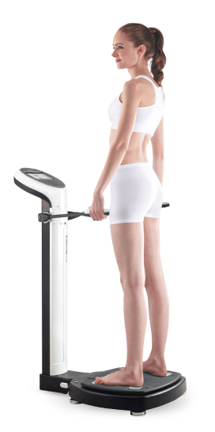

¿En qué consiste el procedimiento?
 Es el mejor método para cuantificar los componentes de nuestro cuerpo, diferenciando lo que es masa grasa (tejido adiposo) de la masa magra (músculos, huesos, órganos) siendo la forma más efectiva de controlar de modo adecuado nuestro peso, porque evalúa la cantidad de grasa que realmente pierde y/o la cantidad de músculo que gana.
Un cuerpo sano debe contener más tejido magro que tejido graso. Cuando esto no es así, así se tenga un peso aceptable, pueden aparecer síntomas crónicos que afecten el bienestar.